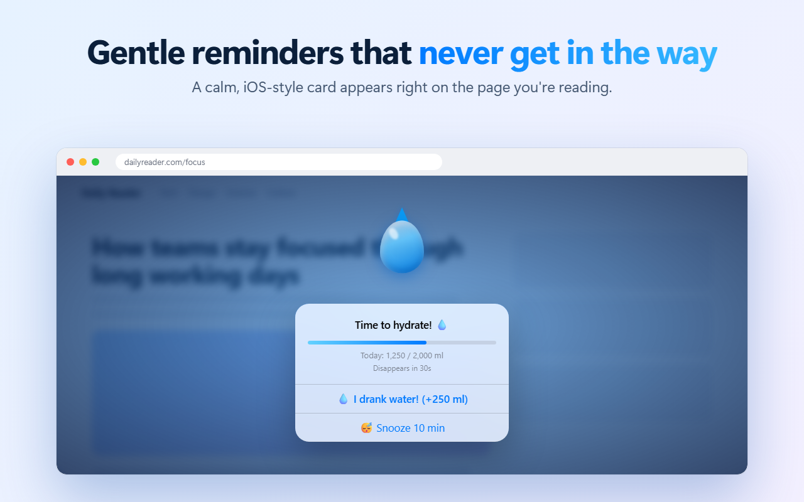
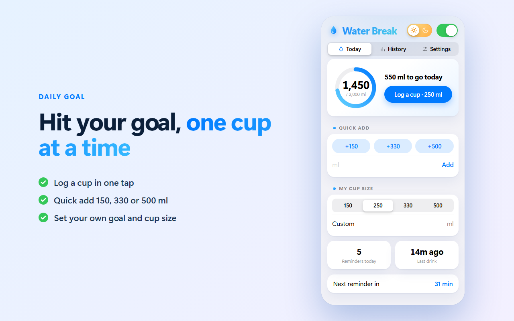
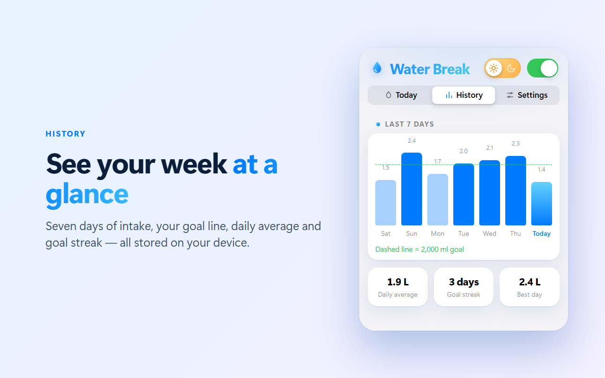
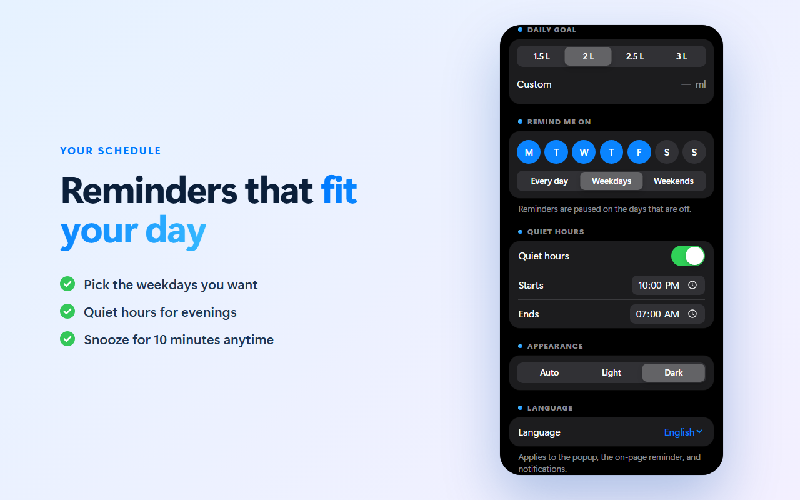
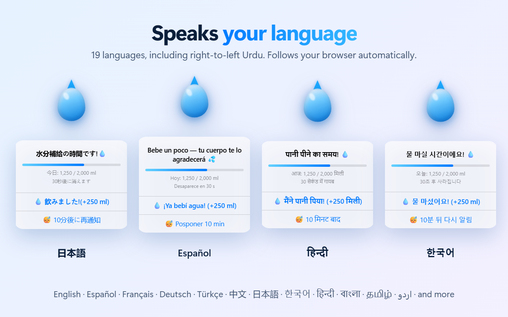

Stay hydrated while you browse
Water Break is a hydration reminder and water tracker for Chrome. A calm water-drop card appears on the page you're reading, you tap once, and you're back to work.
Add to Chrome See features
Everything you need to drink enough water
⏰ Gentle reminders
Every 20 minutes up to every few hours, or any custom interval. Snooze for 10 minutes anytime.
🎯 Daily goal in ml
Set your goal and cup size, log a cup in one tap, or quick-add 150, 330 or 500 ml.
📊 Weekly history
A 7-day chart with your goal line, daily average, best day and goal streak.
📅 Your schedule
Pick the weekdays you want reminders and set quiet hours so nothing nudges you at night.
☀️ Light and dark
Flip with the sun and moon switch, or follow your system theme.
🌍 19 languages
English, Español, Français, Deutsch, Português, Türkçe, हिन्दी, বাংলা, தமிழ், اردو, 日本語, 한국어, 中文 and more.
A closer look




Private by design
No account, no ads, no tracking, no analytics. Your water log stays on your device and Water Break makes no network requests. Read the full privacy policy.